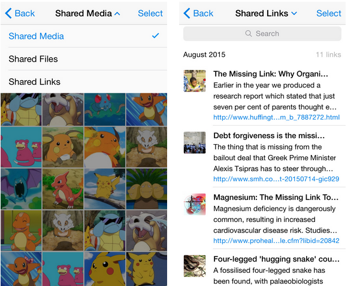
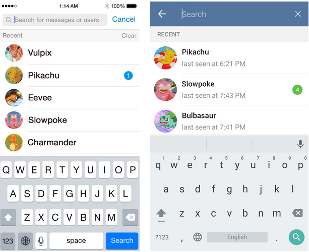

首頁 >
官方新聞 > 共享的連結及最近的搜尋 （原文）（最新手機版中文化檔案）
您曾經試圖在忙碌的聊天室找某人分享的一個連結嗎？它並非總是容易找到的。當然，您可以使用訊息搜尋功能，但現在它可以更容易 – 只要到共享的媒體中，找新功能「共享的連結」部分。看下面的圖片就知道了！

您會看到文字訊息伴隨著連結，或由連結本身所傳送的豐富的預覽資料。此功能目前可用於 iOS 和 Android 版 App，但我們其它的版本也很快會跟上。
最近的搜尋結果
順便提一下，作為 iOS 和 Android 的前次小更新中，點擊主畫面的「全域搜尋」，現在可以讓您快速存取到最近的搜尋結果。

這個秋天，我們正要用力推動大規模更新。敬請關注！
電報團隊
2015年8月20日